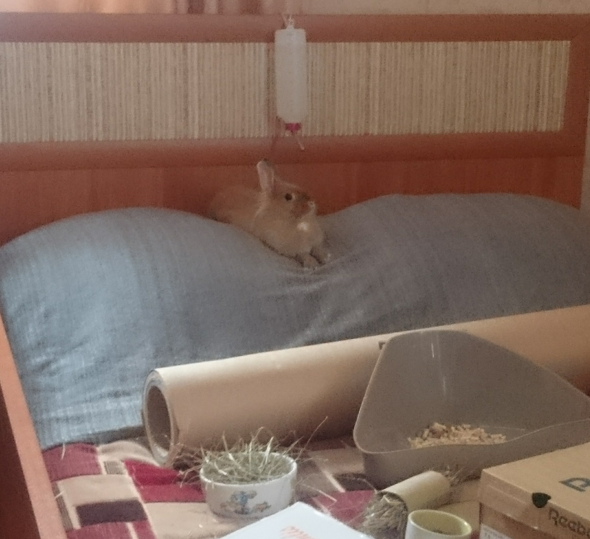

Привет! Меня зовут Огонёк и сегодня я расскажу немного о себе, своей жизни и приключениях.
Да - я крольчиха, но лапки не помешают написать немного текста о себе.

Привет! Меня зовут Огонёк и сегодня я расскажу немного о себе, своей жизни и приключениях.
Да - я крольчиха, но лапки не помешают написать немного текста о себе.
Начну с момента переезда, когда меня пересадили в небольшую коробку и около полутора часа везли в зоомагазин. Там коробку открыли, меня немного осмотрели и посадили назад.
Через 10 минут я была уже в новом доме. Было немного страшно, поэтому я поспешила спрятаться в маленьком домике.
Позже я вышла познакомиться с новыми членами свой семьи. На лапах я тогда стояла не очень уверенно - окружение всё ещё пугало, поэтому меня отправили привыкать к своему новому месту обитания.
Спустя некоторое время после того, как я привыкла к своему жилищу, меня начали приглашать на кратковременные прогулки.
Здесь я могла в полной мере побегать, полазить в трубе, плюхнуться с разбега на бочок. Периодически кто-то из семьи давал мне немного сушёной морковки, а также зачем-то сажал в лоток - место, в котором до сих пор тянет на размышления и сон.
После прогулок меня возвращали обратно домой. Со временем, в доме стало тесновато, но я чувствовала, что что-то готовится...

В один прекрасный день моё жилище переставили и сняли его верхнюю часть. Появилась возможность побегать. Также, я обнаружила вход в норки из коробок, которые можно было погрызть и покопать. Моей семье не очень понравилось, что я любила копать в 4 утра, поэтому пришлось сместить немного время этого мероприятия.
Также я заметила, что наверху есть ещё место, но оно было чем-то заполнено. Позже мне выделили и его.
Но я по-прежнему любила гулять вне дома - лоток стал лифтом на прогулочную территорию, а назад, со временем, я научилась забираться сама.
Однажды, мои коробочные норки пришли в негодность и семья заменила их на другие, они оказались на редкость вкусные и вместо того, чтобы просто их копать отрывать, я не брезговала иногда съесть несколько кусочков. Как оказалось позже, это привело к печальным последствиям - меня пять дней подряд возили к доктору 2 раза в день. После завершения процедур я ещё очень долго дулась на свою семью и даже научилась похрюкивать, если мне что-то не нравится.
Коробки убрали, а на замену пришёл мягкий домик, который было не так весело копать. Тогда я ещё не знала, что готовится нечто грандиозное...
Меня перенесли в другую комнату вместе с домом. Теперь можно было забраться наверх и осмотреть всё вокруг. Через некоторое время меня принесли назад в родную комнату, но дом сильно отличался. Я находилась выше, чем обычно. Исследовав всё вокруг я поняла, что нахожусь на трёхпалубном корабле с парусами и местами, где можно побегать, покапать и отдохнуть.
Похоже, я стала капитаном Огоньком!
Есть моменты, которые проще показать, чем описать. Поэтому вот ещё несколько ярких моментов моей жизни.